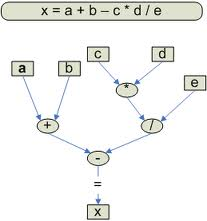

Evaluating an exression is one of the most common operations in programming. An expression may be evaluated to assign a variable a new value or to test the truthfulness of a test condition. An exression can be written in the postfix, prefix or infix form.
In prefix form the operator is specified before the two operands:
operator,a,b
Example: +ab
In infix form the operator is specified between the two operands:
a,operator,b
Example: a+b
In postfix form the operator is specified after the two operands:
a,b,operator
Example: ab+
In almost all the programming languages expressions are written in the infix form. Later, these expression can be converted into the equivalent postfix or prefix form by the computer for evaluation. An expression used in computer programming is very similar to an algerbraic expression and when many operators are specified in a expression, then the evaluation takes place according to the precedence of operators. A paranthesis can be used to override the precedence of operators and force the evalutation of a sub-expression within the expression.
Evaluating an expression involves repeatedly solving the sub-expression in the lowest level paranthesis and substituting its value to solve the bigger expression. If an expression or sub-expression does not have a paranthesis, then we can directly compute its value with respect to the precedence of the operators involved in the expression. That is the operator with higher precedence is solved before the operator with lower precedence. The following table gives the precedence order of all the operators:
Table of precedence (Chick here)
The following example illustrates the evaluation of an expression based on the precedence of operators:
|  |
1. To learn about different types of operators
2. To learn about the precedence of the operators
3. To learn how to evaluate an expression